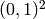
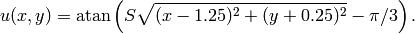
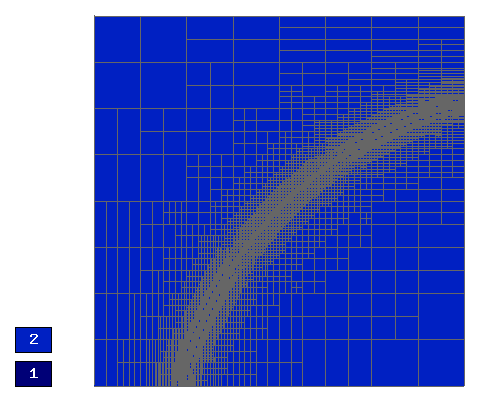
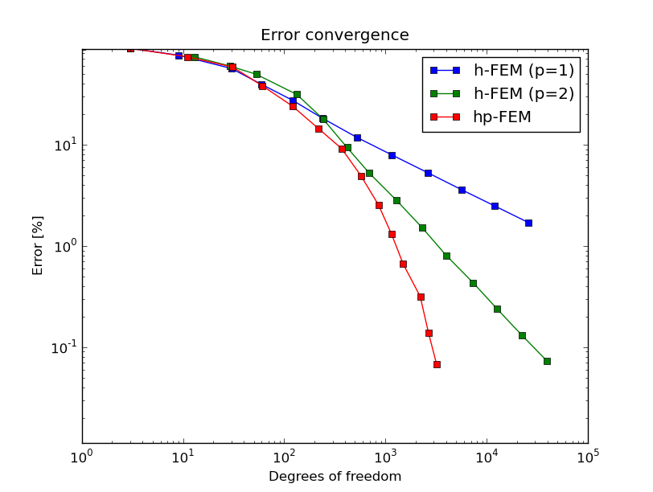
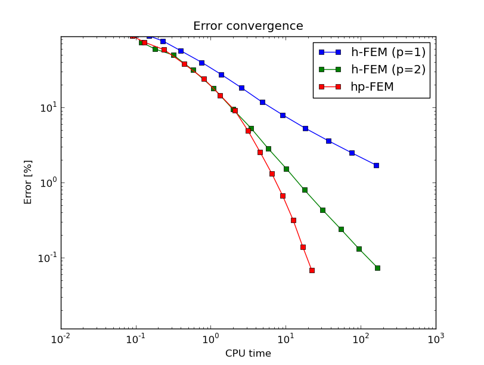

Interior Layer (Elliptic)¶
Git reference: Benchmark layer-interior.
This example has a smooth solution that exhibits a steep interior layer.
Equation solved: Poisson equation
(1)
Domain of interest: Unit square .
Right-hand side:
(2)
Exact solution:
(3)
where  is a parameter (slope of the layer). With larger , this problem
becomes difficult for adaptive algorithms, and at the same time the advantage of
adaptive
is a parameter (slope of the layer). With larger , this problem
becomes difficult for adaptive algorithms, and at the same time the advantage of
adaptive  -FEM over adaptive low-order FEM becomes more significant. We will
use in the following.
-FEM over adaptive low-order FEM becomes more significant. We will
use in the following.
Code for the exact solution and the weak forms:
// Exact solution.
static double fn(double x, double y)
{
return atan(SLOPE * (sqrt(sqr(x-1.25) + sqr(y+0.25)) - M_PI/3));
}
static double fndd(double x, double y, double& dx, double& dy)
{
double t = sqrt(sqr(x-1.25) + sqr(y+0.25));
double u = t * (sqr(SLOPE) * sqr(t - M_PI/3) + 1);
dx = SLOPE * (x-1.25) / u;
dy = SLOPE * (y+0.25) / u;
return fn(x, y);
}
// Boundary condition types.
BCType bc_types(int marker)
{
return BC_ESSENTIAL;
}
// Essential (Dirichlet) boundary condition values.
scalar essential_bc_values(int ess_bdy_marker, double x, double y)
{
return fn(x, y);
}
// Bilinear form for the Poisson equation.
template<typename Real, typename Scalar>
Scalar bilinear_form(int n, double *wt, Func<Scalar> *u_ext[], Func<Real> *u, Func<Real> *v, Geom<Real> *e, ExtData<Scalar> *ext)
{
return int_grad_u_grad_v<Real, Scalar>(n, wt, u, v);
}
template<typename Real>
Real rhs(Real x, Real y)
{
Real t2 = sqr(y + 0.25) + sqr(x - 1.25);
Real t = sqrt(t2);
Real u = (sqr(M_PI - 3.0*t)*sqr(SLOPE) + 9.0);
return 27.0/2.0 * sqr(2.0*y + 0.5) * (M_PI - 3.0*t) * pow(SLOPE,3.0) / (sqr(u) * t2) +
27.0/2.0 * sqr(2.0*x - 2.5) * (M_PI - 3.0*t) * pow(SLOPE,3.0) / (sqr(u) * t2) -
9.0/4.0 * sqr(2.0*y + 0.5) * SLOPE / (u * pow(t,3.0)) -
9.0/4.0 * sqr(2.0*x - 2.5) * SLOPE / (u * pow(t,3.0)) +
18.0 * SLOPE / (u * t);
}
template<typename Real, typename Scalar>
Scalar linear_form(int n, double *wt, Func<Scalar> *u_ext[], Func<Real> *v, Geom<Real> *e, ExtData<Scalar> *ext)
{
return -int_F_v<Real, Scalar>(n, wt, rhs, v, e);
}
Solution:

Final mesh (h-FEM with linear elements):

Final mesh (h-FEM with quadratic elements):

Final mesh (hp-FEM):

DOF convergence graphs:

CPU time convergence graphs:
